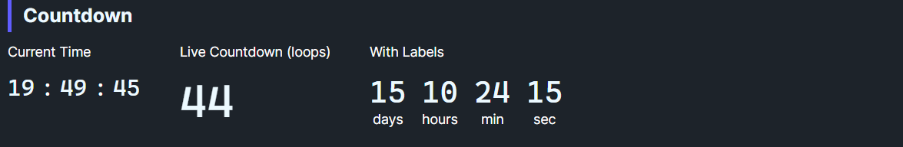

DaisyCountdown is a versatile time display and timing control that can:
1. Display a single time segment (hours, minutes, or seconds) for use as a digit cell
2. Run a countdown timer from a specified duration to zero
3. Work as a stopwatch with lap recording and precise TimeSpan tracking
4. Show live clock units (hours/minutes/seconds of current time)
It supports TimeSpan-based timing with millisecond precision, lap recording with timestamps, and integrates seamlessly with DaisyClock for composite displays.
| Mode | Description |
|---|---|
Display |
Static display - shows Value or Duration |
Countdown |
Timer - counts down from Duration to zero |
Stopwatch |
Elapsed time - counts up from zero with lap support |
| Property | Type | Description |
|---|---|---|
Value |
int (0-999) |
Displayed value for digit cell mode |
Digits |
int (1-3) |
Number of digits to display |
ClockUnit |
Hours/Minutes/Seconds/None |
When set, shows that component of current time |
Mode |
CountdownMode |
Operating mode: Display, Countdown, or Stopwatch |
| Property | Type | Description |
|---|---|---|
Duration |
TimeSpan |
Starting duration for countdown mode |
Remaining |
TimeSpan |
Time remaining (read-only) |
Elapsed |
TimeSpan |
Elapsed time in stopwatch mode (read-only) |
IsRunning |
bool |
Whether timer/stopwatch is active |
| Property | Type | Description |
|---|---|---|
IsCountingDown |
bool |
Starts simple countdown (decrements Value) |
Interval |
TimeSpan |
Tick interval (default 1s) |
Loop |
bool |
When true, resets to LoopFrom at zero |
LoopFrom |
int |
Value to reset to when looping |
| Event | Description |
|---|---|
CountdownCompleted |
Simple countdown (Value-based) reached zero |
TimerCompleted |
TimeSpan-based countdown reached zero |
Tick |
Raised on each timer tick with current time value |
LapRecorded |
A lap was recorded (stopwatch mode) |
DaisyCountdown supports lap recording in Stopwatch mode:
// Access recorded laps
foreach (var lap in countdown.Laps)
{
Console.WriteLine($"Lap {lap.Number}: {lap.LapDuration:mm\\:ss\\.fff}");
Console.WriteLine($" Total: {lap.TotalElapsed:hh\\:mm\\:ss}");
Console.WriteLine($" Recorded at: {lap.Timestamp:HH:mm:ss}");
}
// Record a new lap
countdown.RecordLap();
// Clear all laps
countdown.ClearLaps();The LapTime class contains:
Number - Lap number (1-based)Timestamp - When recorded (DateTimeOffset for data exchange)TotalElapsed - Total time from startLapDuration - Duration of this specific lap<!-- Live clock: HH:MM:SS using DaisyJoin -->
<daisy:DaisyJoin>
<controls:DaisyCountdown ClockUnit="Hours" Digits="2" Size="Large" />
<TextBlock Text=":" FontSize="24" VerticalAlignment="Center" />
<controls:DaisyCountdown ClockUnit="Minutes" Digits="2" Size="Large" />
<TextBlock Text=":" FontSize="24" VerticalAlignment="Center" />
<controls:DaisyCountdown ClockUnit="Seconds" Digits="2" Size="Large" />
</daisy:DaisyJoin>
<!-- Simple looping countdown (59...0...59...) -->
<controls:DaisyCountdown Value="59"
Digits="2"
IsCountingDown="True"
Loop="True"
LoopFrom="59"
Size="Large" />
<!-- TimeSpan-based countdown timer (5 minutes) -->
<controls:DaisyCountdown x:Name="Timer"
Mode="Countdown"
Duration="0:05:00"
ShowHours="False"
ShowSeconds="True"
Size="Large" />
<!-- Stopwatch with milliseconds -->
<controls:DaisyCountdown x:Name="Stopwatch"
Mode="Stopwatch"
ShowMilliseconds="True"
Size="Large" />// Start/Pause/Reset work for both Countdown and Stopwatch modes
Timer.Start();
Timer.Pause();
Timer.Reset();
// Set duration from string (multiple formats supported)
Timer.TrySetDuration("5:30"); // 5 minutes 30 seconds
Timer.TrySetDuration("PT5M30S"); // ISO 8601 format
Timer.TrySetDuration("330"); // 330 seconds
// Get display values in various formats
var display = Timer.GetDisplayString(); // "05:30.000"
var milliseconds = Timer.GetDisplayMilliseconds(); // 330000
var seconds = Timer.GetDisplaySeconds(); // 330.0
// Lap recording (Stopwatch mode)
Stopwatch.RecordLap();
foreach (var lap in Stopwatch.Laps)
{
Debug.WriteLine($"Lap {lap.Number}: {lap.LapDuration}");
}
// Event handling
Timer.TimerCompleted += (s, e) => ShowNotification("Timer done!");
Timer.Tick += (s, remaining) => UpdateProgress(remaining);
Stopwatch.LapRecorded += (s, lap) => AddLapToList(lap);DaisyCountdown works with FloweryTimeHelpers for data exchange:
// Convert to portable formats
var ms = FloweryTimeHelpers.ToMilliseconds(timer.Elapsed);
var iso = FloweryTimeHelpers.ToIso8601Duration(timer.Elapsed);
// Parse from strings
if (FloweryTimeHelpers.TryParseDurationPrecise("01:30:45.500", out var duration))
timer.Duration = duration;
// Lap timestamps are DateTimeOffset for serialization
var lapJson = JsonSerializer.Serialize(stopwatch.Laps);DaisyCountdown includes built-in accessibility for screen readers via the AccessibleText property.
| Property | Type | Default | Description |
|---|---|---|---|
AccessibleText |
string |
"Countdown" |
Context text for screen readers |
<!-- Custom context: announces "Time remaining: 10" -->
<controls:DaisyCountdown Value="10" AccessibleText="Time remaining" IsCountingDown="True" />
<!-- With unit: announces "Session expires in: 5 minutes" -->
<controls:DaisyCountdown ClockUnit="Minutes" AccessibleText="Session expires in" Digits="2" />Digits="2" for clock displays to maintain consistent widthMode="Countdown" or Mode="Stopwatch" with TimeSpan propertiesShowMilliseconds="True" for sub-second precision (updates at 100ms intervals)RecordLap() - each lap includes an absolute timestamp for data exportTrySetDuration() to accept user input in various formatsDaisyCountdown cells inside DaisyClock (Segmented style)